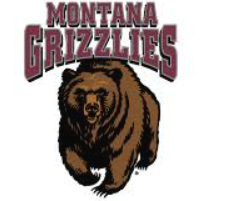

<!doctype html>
<html lang="en">
  <head>
    <meta charset="UTF-8" />
    <meta name="viewport" content="width=device-width, initial-scale=1.0" />
    <title>Resume - Krista Charters</title>
  </head>
  <body></body>
</html>

<header>
  

  <nav>
    <ul>
      <li><a href="index.html">Home</a></li>
      <li><a href="resume.html">Resume</a></li>
    </ul>
  </nav>
</header>

<main>
  <h1>Resume</h1>
</main>

<!-- -------- Education Section -------- -->
<section>
  <h2>Education</h2>

  <h3>University of Montana</h3>
  <p>
    Computer Science, Concentration in Software Engineering<br />
    Expected Graduation: May 2028
  </p>

  <h3>Sequim High School</h3>
  <p>
    High School Diploma<br />
    GPA: 3.8
  </p>
</section>

<!-- -------- Professional Experience Section -------- -->
<section>
  <h2>Professional Experience</h2>

  <h3>Barista — Rainshadow Cafe</h3>
  <ul>
    <li>Provided customer service in a fast-paced environment</li>
    <li>Prepared food and beverages</li>
    <li>Managed transactions accurately</li>
    <li>Worked collaboratively as part of a team</li>
  </ul>
</section>

<!-- -------- Skills Section -------- -->
<section>
  <h2>Skills</h2>
  <ul>
    <li>Java</li>
    <li>Python</li>
    <li>Professional Communication</li>
    <li>Team Collaboration</li>
    <li>Strong Interpersonal Skills</li>
  </ul>
</section>
